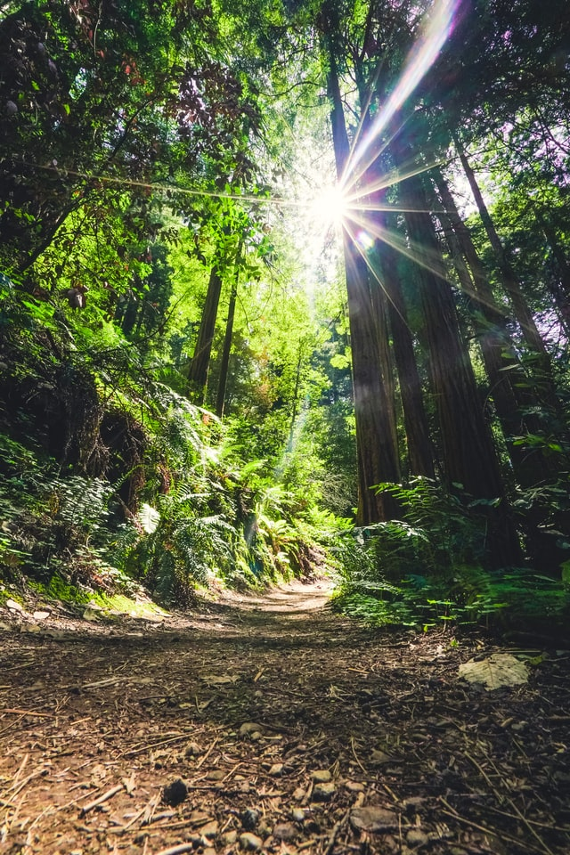

Delight National Park
No matter what kind of hiker you are, you will find a way to enjoy walking here. Our state parks provide access to everything from nature's family-friendly trails to just a few miles of week-long long-distance hiking adventures to reach the valleys. These can demonstrate a lot of challenges: spatial flora and fauna, great geological exhibitions, fun and secret backpacker camping, and much more.
Hiking
| # | Hiking Trails | Miles | Start Of Trail |
|---|---|---|---|
| 1 | Bruce Vento | 3.4 | Northwest |
| 2 | Luce Line | 10.5 | Southwest |
| 3 | Winchell Trail | 24.5 | Northwest |
| 4 | Agassiz | 5.7 | Northeast |
| 5 | Douglas | 24.5 | Southeast |
Photo Gallary
